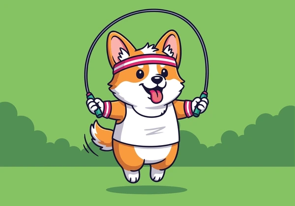

Test de Autoestima
Evalúa cómo te percibes a ti mismo, tu confianza y aspectos emocionales relacionados con la elección vocacional.
Explora nuestros tests: selecciona el que más te interese.
Evalúa cómo te percibes a ti mismo, tu confianza y aspectos emocionales relacionados con la elección vocacional.

Mide tu disposición hacia diferentes tareas (trabajo en equipo, liderazgo, resiliencia) para orientar áreas afines.

Revisa tus habilidades técnicas y cognitivas (numéricas, verbales, espaciales) para identificar carreras compatibles.